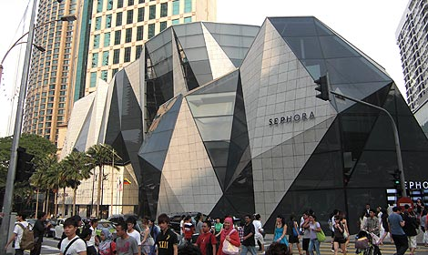

Shopping
Starhill gallery Kuala Lumpur

Connected directly to the five-star JW Marriott, Starhill Gallery is a high-end shopping mall with seven floors of luxury retail experience. The Feast and Relish floors feature a myriad of fine-dining options, while the Indulge and Adorn floors showcase a variety of designer labels with the former focusing more on fashion labels.